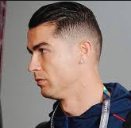
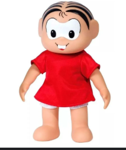

Cristiano Ronaldo dos Santos Aveiro OIH • GOIH • ComM (Funchal, 5 de fevereiro de 1985) é um futebolista português
Mônica de Sousa[4] é, de longe, a personagem mais conhecida de Mauricio de Sousa e grande símbolo das histórias em quadrinhos nacionais e ao redor do mundo.
